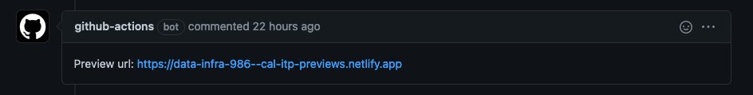

Submitting Changes
Contents
Submitting Changes¶
Making Changes and Merging PRs¶
There are two common ways to make changes to the docs. For those not used to using Git or the command line use the instructions for the GitHub website.
Using Git (Command Line)¶
Follow the Conventional Commits standard for all commits and PR titles
Prefix docs commits and PR titles with
docs(subject-area):
Installing and Using pre-commit hooks
Installing:
pip install pre-commitpre-commit installin the appropriate repo
Using:
The hooks will check your markdown for errors when you commit your changes.
If upon committing your changes you see that the pre-commit checks have failed, the fixes will be made automatically but you will need to re-add and re-commit the files. Don’t forget to do this!
If for any reason you would like to bypass the hooks, append the flag
--no-verifyIf needed, run
pre-commit run --all-filesto run the hooks on all files, not just those staged for changes.
Open a PR
Use GitHub’s draft status to indicate PRs that are not ready for review/merging
Give your PR a descriptive title that has a prefix of
docs(subject-area):as according to the Conventional Commits standard (1).You will find there is already a template populated in the description area. Scroll to the bottom and use only the portion beneath
Docs changes checklist. Add description where requested (2).In the right-hand sidebar add the following (3):
Reviewers This is the person or people who will review and approve your edits to be added to the main codebase. If no one is selected, the docs
CODEOWNERwill be flagged for review. Beyond that, request those who will be affected by changes or those with expertise in relevant subject areas.Assignees If you’re responsible for this work tag yourself here. Also tag any collaborators that you may have.
Affix the label
documentationto more easily keep track of this work.
If this work is ready for review, select ‘Create pull request’. If more work is required, select ‘Create draft pull request’ from the dropdown (4).

Do not use GitHub’s “update branch” button or merge the
mainbranch back into a PR branch to update it. Instead, rebase PR branches to update them and resolve any merge conflicts.
Once you have created a PR and it has been reviewed and approved, beyond any requested changes, you will be notified that your work has been merged into the live documentation!
Using the GitHub User Interface (Website)¶
These documents are currently editable on GitHub’s website. Read the instructions below to use the GitHub website to make changes.
Navigate to GitHub and make changes¶
Click the GitHub icon in the top right corner of the page you’d like to edit and choose
Suggest Edit.Make changes on that page with your desired content types.

Commit your changes and create a new branch¶
On the page that you’ve edited, navigate to the bottom and find where it says
Commit changes.Add a short title and description for your changes (1).
Make sure to prefix the title with
docs(subject-area):as according to the Conventional Commits standard.
Select the second option
Create a new branch...and add a short but descriptive name for this new branch (2).Select
Commit Changes. This will take you to a new page to create aPull Request, the mechanism that will allow your new work to be added to the docs.
Create a Pull Request for review and merging¶
After committing your changes you will be brought to another page to create a PR.
Give your PR a descriptive title that has a prefix of
docs(subject-area):as according to the Conventional Commits standard (1).You will find there is already a template populated in the description area. Scroll to the bottom and use only the portion beneath
Docs changes checklist. Add description where requested (2).In the right-hand sidebar add the following (3):
Reviewers This is the person or people who will review and approve your edits to be added to the main codebase. If no one is selected, the docs
CODEOWNERwill be flagged for review. Beyond that, request those who will be affected by changes or those with expertise in relevant subject areas.Assignees If you’re responsible for this work tag yourself here. Also tag any collaborators that you may have.
Affix the label
documentationto more easily keep track of this work.
If this work is ready for review, select ‘Create pull request’. If more work is required, select ‘Create draft pull request’ from the dropdown (4).
Once you have created a PR and it has been reviewed and approved, beyond any requested changes, you will be notified that your work has been merged into the live documentation!
GitHub Docs Action¶
What is the GitHub Docs Action?¶
The action is an automated service provided by GitHub that ensures suggested additions are in the proper syntax and facilitates the preview of your changes. You can see if this action was successful at the bottom of your docs PR.

How is the docs GitHub action triggered?¶
Our GitHub action is triggered on pushes to the data-infra repository related to the docs directory.
How do I preview my docs change?¶
Once the GitHub action has run and all tests have passed a ‘Netlify’ preview link will be generated. You can find this link in the comments of your PR. Follow that link to preview your changes. 